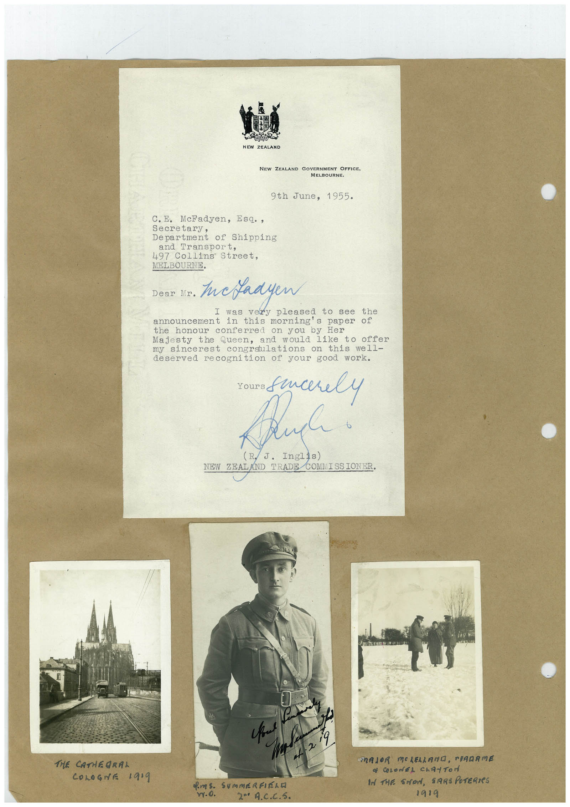

Book 1 · scan 137


Description
Transcription
Context
Review notes
Compare the machine draft with the scan. Handwriting and names need human review.
Artifacts
Edit the artifacts field in this note’s frontmatter to change these records. This summary is generated.
B01-S137-A01 — Letter & Photo — Book 1, scan 137
Types: Typed document, Letter, Photo
Scope: Whole scanned page; individual items can be split out during review.
Caption: Not mapped yet.
Caption source: Not recorded yet.
Caption status: unmapped
Machine transcription
NEW ZEALAND NEW ZEALAND GOVERNMENT OFFICE, MELBOURNE. 9th June, 1955. C. E. McFadyen, Esq., Secretary, Department of Shipping and Transport, 497 Collins Street, MELBOURNE. Dear Mr. tuckadyen was very pleased to see the announcement in this morning's paper of the honour conferred on you by Her Majesty the Queen, and would like to offer my sincerest congraulations on this well- deserved recognition of your good work. Pluck! NEW ZEAL ND TRADE COMMISSIONER. 19, THE CATHEGRAL COLOGNE 1919 vy.o. 20 A.C.C.S. TRAJOR MOLELLADO, PIRARME • COLONEL CLATTOr IN THE SMON, SARS POTERIES 1919